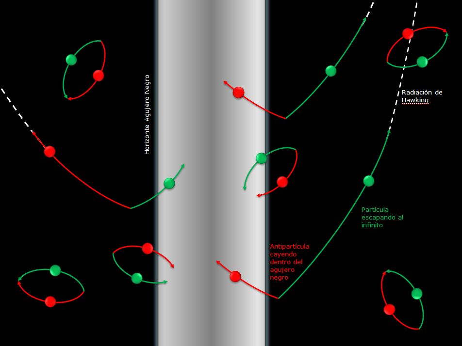
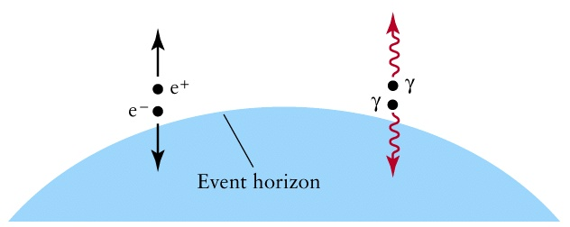

La radiación de Hawking y los agujeros negros primordiales
Stephen Hawking, uno de los cosmologos mas importantes en nuestros tiempos y quien realizo grandes aportaciones en el campo de los agujeros negros, en 1974 predijo que los agujeros negros emiten radiación térmica y que ésta radiacion era inversamente proporcional a su masa (cuán menor fuera su masa, mayor su radiación), de tal manera que un agujero negro con la masa del sol emitiria una temperatura de radiacion de -273 ºC mientras uno con la masa de una montaña tendria una temperatura de 6,726 ºC
En el vacío interestelar se generan pares de particulas que al instante son de nuevo absorbidas por el mismo vacío. Puede ser el caso de un electron y un positron, ambas antiparticula de la otra (particulas identicas con cargas electricas opuestas) dichas particulas toman 'prestada' energia del vacio para formarse que devuelven al instante al destruirse la una a la otra
Puede ocurrir que estos pares de particulas se generen justo en el horizonte de un agujero negro de manera que una de las particulas sea 'tragada' por el agujero y la otra escape al vacio del espacio, lo que impediria que las particulas se destruyan la una a la otra, en ese caso el agujero negro al absorber una de las particulas estaria sediendo energia a la particula que logró escapar emitiéndola como radiación.
El agujero negro cediendo energía a las particulas emitídas, perdería masa lo que disminuiría su tamaño hasta desaparecer. A este hipotetico proceso se le conoce como evaporación del agujero negro y la energia emitida es la radiación de Hawking
La evaporacion hace que el agujero negro se haga cada vez más pequeño y a su vez más caliente. Lo que provoca que al disminuir de tamaño sea mas fácil la emisión de particulas creciendo la radiación de manera progresiva, pero es un proceso en exceso lento. A un agujero negro con la masa del sol le tomaria evaporarse un tiempo mayor a la edad del universo (cerca de 14,000 millones de años). Por lo que es un evento hipotetico que no se ha observado
Para poder ser observado en la actualidad el fenomeno de la evaporacion de un agujero negro, deberia existir uno de masa muy reducida y haberse formado justo despues del big bang. Su origen no serian las estrellas, sino variaciones en la densidad del universo primitivo. llamados agujeros negros primordiales, pero eso es otro tema.

Efren Raymundo Morales
Estudiante Informatica